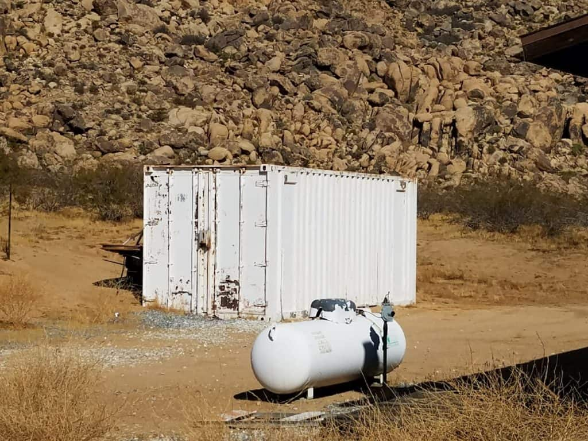
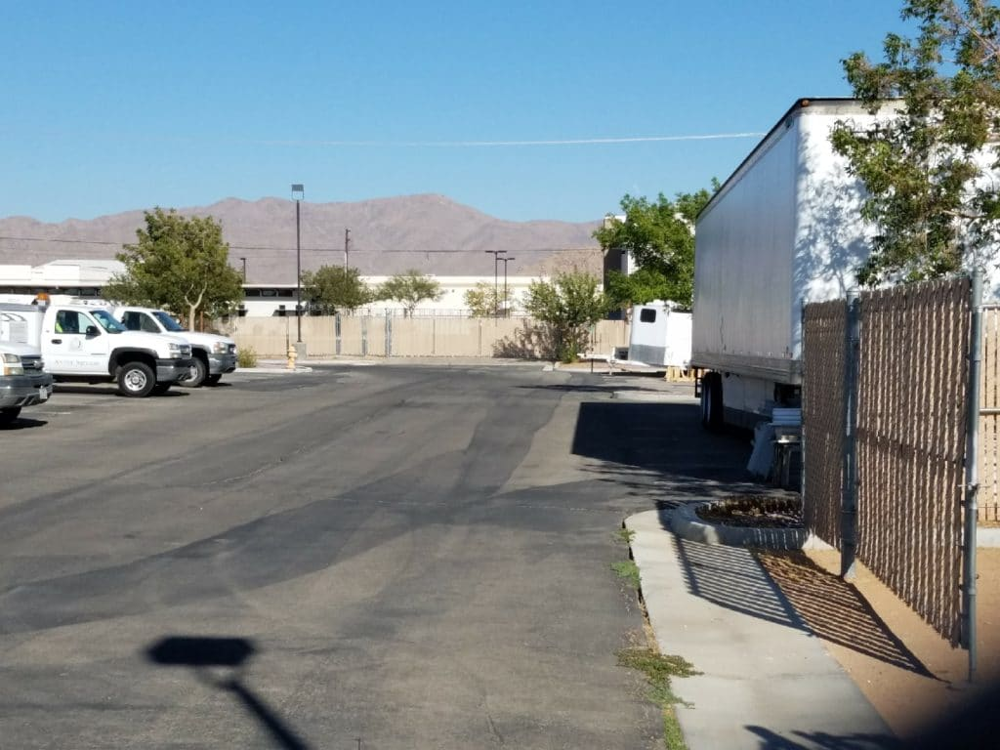

You may remember that at the Apple Valley Town Council meeting on December 13, 2016, the council voting unanimously to allow cargo shipping containers in the area known as The Village (AKA Ordinance No. 490). As luck would have it, Mayor Scott Nassif and Councilman Larry Cusack each have businesses in this area.
Seems to be part of the Town Council’s rule or ruin
plans for us all. The water system, electricity billing, properties, or just control … if they want it, they try to take it. So much for a better way of life.
Recently, the Town Council decided to change the zoning of the Ranchos subdivision in such a way that having a cargo shipping container is no longer permitted without jumping through hoops. Here’s what one of the affected parties has to say about it:
Homeowners in the Ranchos Subdivision of Apple Valley, CA were originally allowed to keep Cargo Shipping Containers on their land because the zoning was Residential — Agricultural 1 (RA1). The Town of Apple Valley changed the zoning to Residential — Estate (RE1) and now wants the shipping containers gone or decorated like a shed with a peaked roof and siding. I have never received a notice of zoning change in over 30-years since the Town incorporated. This is abuse at the very least and tramples on the constitutional rights of property owners who have Cargo Shipping Containers. Any property owner who is being forced out and who has not received notice of zoning change or if you live in the Ranchos Subdivision and would like to retain this right to keep a cargo shipping container on your land, please consider supporting our petition with your signature. This is still America, Land of the free, not some fiefdom or third-world dictatorship.
If you agree, click here to sign their petition.
In addition to The Village, the Town itself has a cargo shipping contained at the Horsemens’ Center, a bunch at the Town’s corporate yard, and one at James Woody Park. There is also a 50-foot trailer at the Municipal Animal Shelter being used for storage, which would be a municipal code violation for anyone else.
Horsemens’ Center

TOAV corporate yard

James Woody Park

Municipal Animal Shelter

Photos courtesy Kerry Henard.
Make it a half-acre and I will support the proposal. WCS
You need to communicate this directly to the persons who put together this petition. We are simply passing along the information.